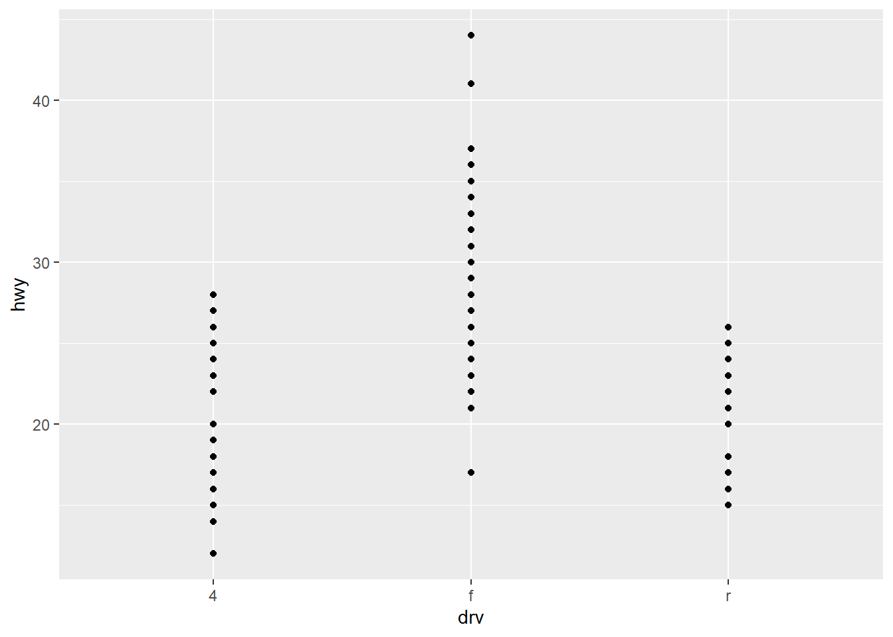
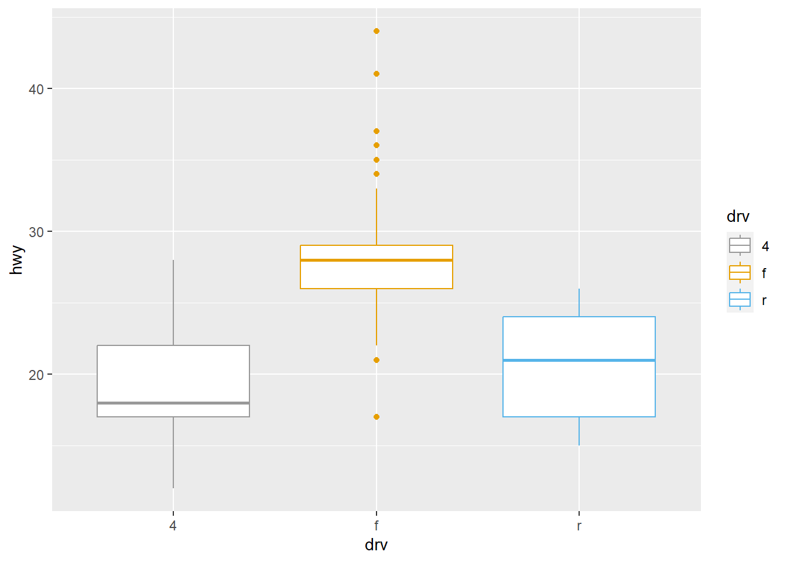
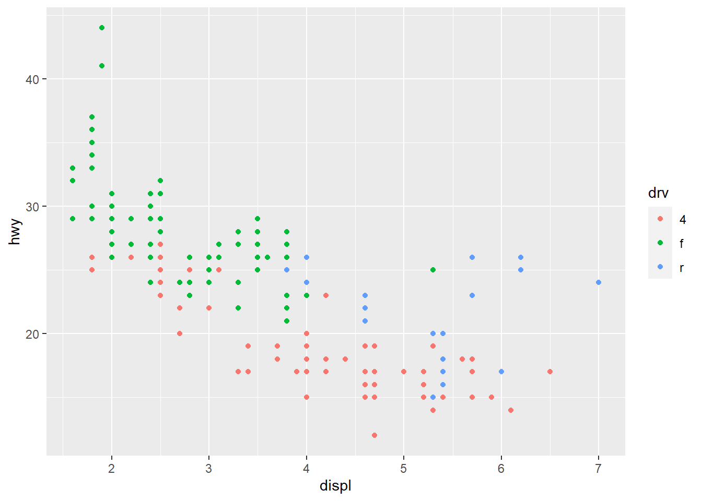
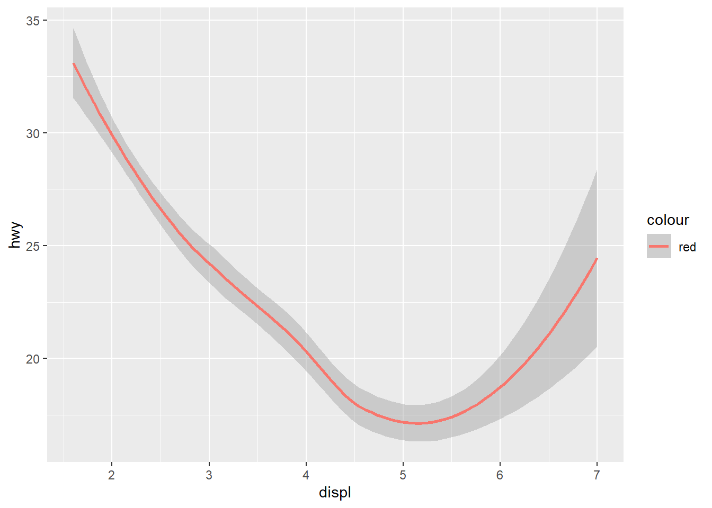
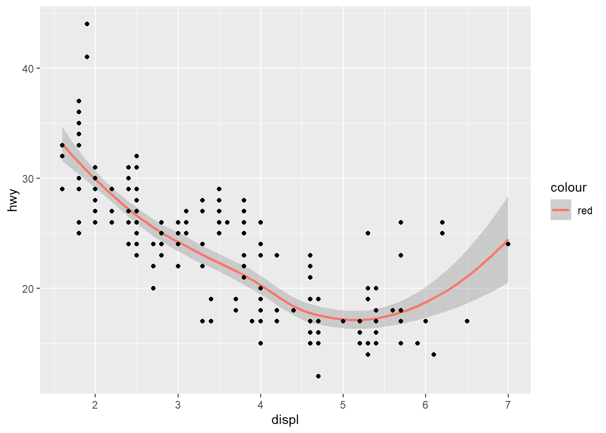

#install.packages("tidyverse", dependencies = TRUE)
library(tidyverse)Introduction to Tidyverse
Introduction to the Tidyvrse in R
Note that this notebook relies heavily on material from the textbook R for Data Science by Hadley Wickham and Garrett Grolemund, and to a lesser extent, on the DataCamp course on the Tidyverse. Both are great resources to explore!
A. What is the Tidyverse?
The Tidyverse is a collection of R packages meant to streamline data science tasks. All Tidyverse packages share an underlying design philosophy, grammar, and data structures. In this notebook, we’ll learn some basics of the Tidyverse. To install the tidyverse, open R Studio and type install.packages(“tidyverse”, dependencies = TRUE). Then, for each new session, you will need to load the Tidyverse:
B. Some (Very) Basic Plotting with ggplot
Let’s do some plotting with the mpg dataset. mpg contains observations collected by the US Environmental Protection Agency on 38 models of cars.
First, load and learn about the variables contained in this dataset. The dataset is in the ggplot2 package, which is included in the tidyverse. So, you can load the data using data(mpg).
data(mpg)
head(mpg)# A tibble: 6 × 11
manufacturer model displ year cyl trans drv cty hwy fl class
<chr> <chr> <dbl> <int> <int> <chr> <chr> <int> <int> <chr> <chr>
1 audi a4 1.8 1999 4 auto(l5) f 18 29 p compa…
2 audi a4 1.8 1999 4 manual(m5) f 21 29 p compa…
3 audi a4 2 2008 4 manual(m6) f 20 31 p compa…
4 audi a4 2 2008 4 auto(av) f 21 30 p compa…
5 audi a4 2.8 1999 6 auto(l5) f 16 26 p compa…
6 audi a4 2.8 1999 6 manual(m5) f 18 26 p compa…Let’s look at a plot that might tell us about the relationship between drv (whether the car is front, rear, or 4-wheel drive) and hwy (highway miles per gallon).
We begin a plot with the function ggplot(), which creates a coordinate system that you can add layers to. Layers are created with “+” geom_boxplot() will make a boxplot. In general, a template for creating plots would be
\(\text{ggplot(data = DATA) + <GEOM_FUNCTION>(mapping = aes(<MAPPINGS>))}\)
Here’s the basic code for the boxplot (fill in the correct variables):
# changing this to a scatter plot
p_scatter = ggplot(data = mpg) + geom_point(mapping=aes(x=drv, y=hwy))
# using 'equal-sign' because using function instead of value
p_scatter
You can mess with all sorts of things. For example, you could change colors:
ggplot(data=mpg) + geom_boxplot(mapping = aes(x=drv, y=hwy,color=drv)) + scale_color_manual(values=c("#999999","#E69F00","#56B4E9")) 
# you can manually select specific color per category as aboveggplot(data=mpg) +
geom_point(mapping= aes(x = displ, y = hwy, color=drv))
What do we notice about the relationship between engine displacement and hwy miles per gallon?
There is a downward trending hwy as displ increases. This trend appears roughly, linear. However, there may be some evidence of curvature at the extremes of the displ
What do we notice?
The relationship between
hwyanddisplis grouped bydrv.We also notice a downward trend between
hwyanddisplin each group (thought it seems like a weak downward trend for rear wheel drive).On average, front wheel drive cars with low engine displacement have the highest highyway mpg. On the contrary, rear wheel drive cars with high engine displacement have the lowest highway mpg.
Another way to add information from a categorical variable to plots is by using facets. Facets split a plot into subplots, such that each subplot contains data for a particular level of the categorical variable.
We can facet by adding the function facet_wrap(~ Catvar, nrow=x to our ggplot. Where, Catvar is the categorical variable that we want to facet on , and x is the number of rows that we’d like (we could also ncol…)
Create a facet plot where you split the data based on the class variable
p_facet = ggplot(data=mpg) +
geom_point(mapping = aes(x=displ, y=hwy)) +
facet_wrap( ~ class, nrow=2)
p_facet
Instead of seeing the individual data points, we might be interested in visualizing some overall trend between displ and hwy. We could do this by substituting geom_points() with geom_smooth(). Try it!
ggplot(data=mpg) + geom_smooth(mapping = aes(x=displ, y=hwy, color='red'))
And, we can layer the smooth over the scatterplot pretty easily by adding “+ geom_point()”. Try it!
ggplot(data=mpg) + geom_smooth(mapping = aes(x=displ, y=hwy, color='red')) + geom_point(mapping = aes(x=displ, y=hwy,))
C. Data Manipulation and Transformation
dplyr is a package in the Tidyverse that provides simple “verbs”, or functions that correspond to the most common data manipulation tasks, to help you translate your thoughts into code. Let’s see how some of these verbs work on the gapminder dataset. First, if you haven’t already, let’s install and load the gapminder package.
#install.packages("gapminder")
library(gapminder)
library(dplyr)Write a summary of the variables in this dataset.
data(gapminder)
head(gapminder)# A tibble: 6 × 6
country continent year lifeExp pop gdpPercap
<fct> <fct> <int> <dbl> <int> <dbl>
1 Afghanistan Asia 1952 28.8 8425333 779.
2 Afghanistan Asia 1957 30.3 9240934 821.
3 Afghanistan Asia 1962 32.0 10267083 853.
4 Afghanistan Asia 1967 34.0 11537966 836.
5 Afghanistan Asia 1972 36.1 13079460 740.
6 Afghanistan Asia 1977 38.4 14880372 786.Filter rows with filter()
It is often useful to study a subset of your data.
The verb filter() will easily allow you to filter rows (observations) in a data frame. Here’s one possibility:
Piping Function: %>
#filter(gapminder, country == "United States")
#or
gapminder %>%
filter(country == "United States")# A tibble: 12 × 6
country continent year lifeExp pop gdpPercap
<fct> <fct> <int> <dbl> <int> <dbl>
1 United States Americas 1952 68.4 157553000 13990.
2 United States Americas 1957 69.5 171984000 14847.
3 United States Americas 1962 70.2 186538000 16173.
4 United States Americas 1967 70.8 198712000 19530.
5 United States Americas 1972 71.3 209896000 21806.
6 United States Americas 1977 73.4 220239000 24073.
7 United States Americas 1982 74.6 232187835 25010.
8 United States Americas 1987 75.0 242803533 29884.
9 United States Americas 1992 76.1 256894189 32004.
10 United States Americas 1997 76.8 272911760 35767.
11 United States Americas 2002 77.3 287675526 39097.
12 United States Americas 2007 78.2 301139947 42952.**Filter
Arranging with arrange()
Use the arrange() verb, in conjunction with the code above to put the United States data in descending order with respect to year.
gapminder %>% filter(country == "United States") %>% arrange(desc(year))# A tibble: 12 × 6
country continent year lifeExp pop gdpPercap
<fct> <fct> <int> <dbl> <int> <dbl>
1 United States Americas 2007 78.2 301139947 42952.
2 United States Americas 2002 77.3 287675526 39097.
3 United States Americas 1997 76.8 272911760 35767.
4 United States Americas 1992 76.1 256894189 32004.
5 United States Americas 1987 75.0 242803533 29884.
6 United States Americas 1982 74.6 232187835 25010.
7 United States Americas 1977 73.4 220239000 24073.
8 United States Americas 1972 71.3 209896000 21806.
9 United States Americas 1967 70.8 198712000 19530.
10 United States Americas 1962 70.2 186538000 16173.
11 United States Americas 1957 69.5 171984000 14847.
12 United States Americas 1952 68.4 157553000 13990.Selecting columns with select()
In addition to being able to filter out a subset of rows, you can also filter out a subset of columns with the select() verb. Try to select just the country and year variables.
head(select(gapminder,country,year))# A tibble: 6 × 2
country year
<fct> <int>
1 Afghanistan 1952
2 Afghanistan 1957
3 Afghanistan 1962
4 Afghanistan 1967
5 Afghanistan 1972
6 Afghanistan 1977Changing columns with mutate()
We can also mutate certain columns. For example, suppose that we wanted life expectancy to be measured in months. We might write:
head(gapminder %>% mutate(lifeExp = lifeExp*12))# A tibble: 6 × 6
country continent year lifeExp pop gdpPercap
<fct> <fct> <int> <dbl> <int> <dbl>
1 Afghanistan Asia 1952 346. 8425333 779.
2 Afghanistan Asia 1957 364. 9240934 821.
3 Afghanistan Asia 1962 384. 10267083 853.
4 Afghanistan Asia 1967 408. 11537966 836.
5 Afghanistan Asia 1972 433. 13079460 740.
6 Afghanistan Asia 1977 461. 14880372 786.Create a new column in the data frame that is just GDP (not GDP per capita).
gapminder_GDP = head(gapminder %>% mutate(gdp = gdpPercap*pop)) #has a new column 'gdp'
gapminder_GDP #name of new a df# A tibble: 6 × 7
country continent year lifeExp pop gdpPercap gdp
<fct> <fct> <int> <dbl> <int> <dbl> <dbl>
1 Afghanistan Asia 1952 28.8 8425333 779. 6567086330.
2 Afghanistan Asia 1957 30.3 9240934 821. 7585448670.
3 Afghanistan Asia 1962 32.0 10267083 853. 8758855797.
4 Afghanistan Asia 1967 34.0 11537966 836. 9648014150.
5 Afghanistan Asia 1972 36.1 13079460 740. 9678553274.
6 Afghanistan Asia 1977 38.4 14880372 786. 11697659231.